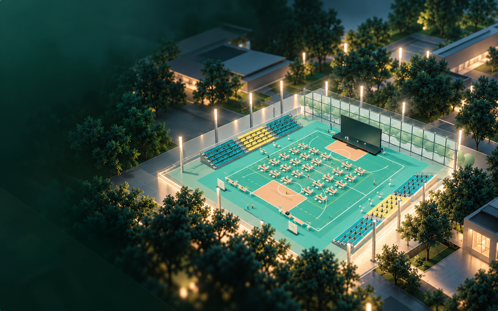

先在屏幕上，
把场地摆一遍。
幕景是一个在浏览器里布置活动现场的工具。选一套场地，或者上传一张平面图，就能开始摆桌椅、试通道，再把方案发出去给人看。不需要会建模。
这份指引怎么用
下面几章按一次真实的准备顺序写：先认场地，再摆物件，然后补上缺的模型，最后把方案交出去。不用一次读完，做到哪一步就看哪一章。
章节随时可以跳；每章末尾的「下一篇」会接着往下走。
幕景是什么
一句话说，它把活动现场搬进屏幕：左边是工具和对话，中间是场地的三维画布。你摆的每一件东西都按真实尺寸记录，平面视图和三维视图看到的是同一份布置。
画布上的改动先是草稿。你跟晴光（左边的助手）改完一版，觉得可以了，再点「确认布置」。确认之前的任何一步都可以撤回。
你能用它做什么
- 按真实尺寸搭场地用场景模板、平面图或地图圈画得到一块场地；没有图纸时，也可以直接输入长宽。
- 在三维里摆物料从物料库取桌椅、灯具、绿植，移动、旋转、改尺寸，边摆边看通道和视线。
- 用一句话改布置告诉晴光你想怎么改，它会把改动做成新的一版，等你确认。
- 生成缺的模型和场地一句话或一张参考图生成物料；没有图纸的现场，可以生成能走进去的三维场地。
- 把方案交出去发一条只读的评审链接收集意见，或导出完整的活动交接给搭建方。
第一次打开
不登录也能先在本机布置。每次新建或切换活动，当前画布会自动收进「我的项目 → 最近活动」，随时可以点「打开」回去。
登录之后，可以把当前方案存成云端项目，换一台设备也能接着改。云端项目同一时间只有一个人有编辑权，其他人打开是只读的；改完保存、点「完成编辑」，队友就能接手。
开始学习
准备好了就从「布置第一个空间」开始。如果你已经有一个真实场地，先把平面图放在手边，后面会用到。
布置第一个空间
先让场地立起来，再往里放东西。这一章只做一件事：把一个空场地摆到能看。
场地从哪来
四条路，按你手上有什么来选。选完都可以再改尺寸和结构。
- 场景模板在左侧「空间」里选一套已经建好的场地，尺寸和门窗都在，适合先试手。
- 平面图在左侧「空间」的「图纸与照片」里上传图纸，用两点标尺标出一段已知长度，墙线会叠在原图上供你核对。
- 地图圈画在布置对话的「你可以做什么」里点「地图圈画」，搜索地点，在卫星图上圈出边界。
- 手输长宽没有平面图时，在左侧「空间」里直接填总宽和总深。上传图纸之后，请改用两点标尺。

场景模板「体育馆」。现成的场地可以继续改尺寸、门窗和布置。
在三维里看清场地
画布边上的工具条决定你怎么看这块场地：
- 平面 / 立体在俯视平面和三维之间切换。对位置看平面，看效果看立体。
- 俯视回到正上方，适合检查通道宽度和整体动线。
- 正面机位绕到场地正面看立面，检查背景板、舞台和遮挡。
- 第一人称走进场站到地面高度往里走，看客人真正看到的视线。
- 看全场一键把整块场地收回画面，摆久了迷路时用它。
需要量两点之间的距离，打开「尺寸标注」；想让物件落在整齐的网格上，打开「网格吸附」。
把物件放进场地
从左侧「物料」里挑模型，点击或拖进画布。选中之后可以移动、旋转和改尺寸；每一步都可以撤销和重做。
摆的时候多看俯视和漫游：俯视看通道够不够宽，走进去看标牌有没有被挡住、主桌有没有挡住入口。
跟晴光说要什么
左侧的晴光可以直接听懂人话。描述你想要的改动，它会把结果做成新的一版，不会立刻覆盖你手上的布置。
“把签到桌移到入口右侧，留出两米通道。”
改得不对就点「撤回」；觉得可以，再点「确认布置」。确认之前，画布上的这一版仍然是草稿。
交给自己检查
结束之前，用三个视角各看一遍：俯视看通道，走进去看视线，正面机位看背景。再打开「尺寸标注」核对主桌和通道的关键尺寸。没有问题，就可以进入下一章。
生成物料与场地
模型库里没有的东西，可以生成。生成会消耗额度，提交之前会让你再确认一次。
物料生成
在左侧对话栏的底部，把「布置」切成「生成」。用一段描述说出你要的物件：它是什么、多大、什么材质和颜色。也可以附一张参考图。
“一张 1.8 米长的原木签到桌，桌下留空，暖色。”
确认之后才提交。生成好的物件会出现在结果里，点「放进场景」就能像普通模型一样摆进场地。
场地生成
手上只有现场照片、没有图纸时，可以让场地生成给出一个能走进去的三维场地。在「生成」里把物件切成「场地」，写清现场的样子。
生成需要等一会儿。完成之后到「空间 → 环境预览」取回，先看预览是不是这块场地，再铺成当前的场地观感。已经摆好的布置不会被悄悄改掉。
提交之前
生成不是即时的，也不是免费的。写清楚用途和尺寸能少跑几趟；提交前界面会写明这次要生成什么，你确认了才会真正开始。
结果不满意可以重跑上一句，也可以回到物料库换一个现成模型。一次生成失败，不会弄丢已经摆好的布置。
分享与导出
方案摆好之后，要让人看见，也要让人能接着做。
发评审链接
在左侧工具条点「发布」，再点「发评审链接」。对方打开的是一个只读页面：能看平面、能在画面上落钉留言，不能改你的布置。
同一份评审最多放 6 张画面。换一个视角截一张，就能把不同角度的现场一起发过去。
收起意见
对方落下的钉会汇总到左侧的 Bingo。这里只读，不在这里改图：先看汇总，再回画布逐条改，改完重新发一版。
导出完整活动交接
在「发布」菜单里点「导出交接」，确认后会在本机生成一份完整活动交接，包含需求、物料、制作和点验。下载后可以离线打开、打印，交给搭建方。
完整活动交接目前只支持本机活动；云端项目请先回到对应的本机活动再导出。
回到上一版
新建或切换活动时，当前画布会自动归档到「我的项目 → 最近活动」。想回到之前那一版，点卡片上的「打开」；当前这一版会先自动存好，不会被覆盖。
存到云端
登录后点头像打开账户中心，在「我的项目」里点「新方案」，当前布置就会成为一份云端项目。换设备登录后，打开这份项目就能接着改。
同一份云端项目同一时间只有一个人能编辑。打开后拿到编辑权的人可以保存；其他人是只读的。改完点「完成编辑」释放编辑权，队友再接。
常见问题
开始用之前，最常被问到的几件事。
一定要登录吗？
不。可以先在本机布置，活动会留在「我的项目 → 最近活动」里。登录后才能使用云端项目，把方案带到另一台设备。
我的东西存在哪？
本机活动保存在这台设备的浏览器里；云端项目存在账号下。换浏览器、换设备或清空站点数据之前，先把当前方案存成云端项目，或导出完整活动交接。
生成会扣额度吗？
会。物料生成和场地生成都会消耗额度；提交之前界面会写明这次要生成什么，你确认了才会开始。
甲方需要账号吗？
不需要。评审链接打开就能看平面、落钉留言，不用注册，也看不到你的编辑工具。
团队与权限现在能用吗？
目前「设置 → 团队」里的成员和权限是演示数据，用来预览界面，不会真的发出邀请。真实协作先在云端项目里用编辑权交接。